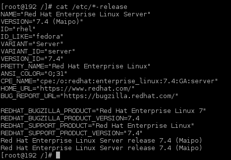
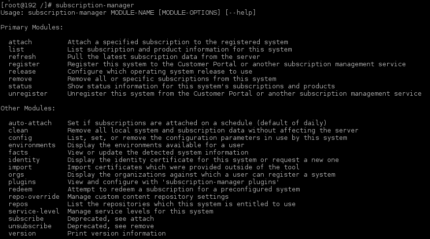
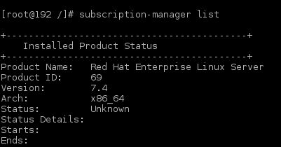
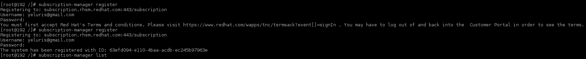
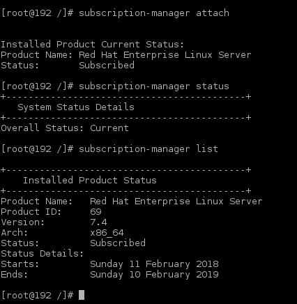
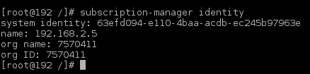

RHEL

How to subscribe to Redhat using subscription-manager
subscription-manager

subscription-manager list

subscription-manager register

subscription-manager attach

subscription-manager identity

Add GUI fromm basic installation
~]# yum groupinstall gnome-desktop x11 fonts
~]# yum groupinstall "Server with GUI"
~]# systemctl set-default graphical.target
~]# systemctl start graphical.target
Add GUI